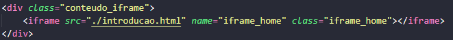
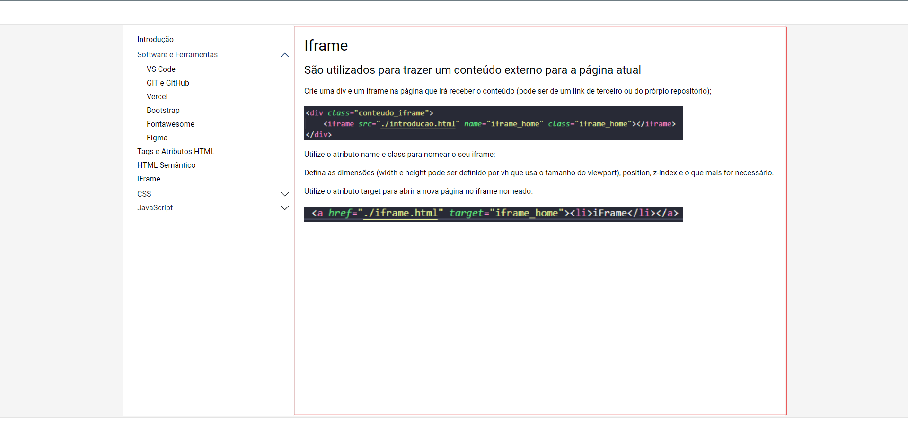

Crie uma div e um iframe na página que irá receber o conteúdo (pode ser de um link de terceiro ou do prórpio repositório);
Utilize o atributo name e class para nomear o seu iframe;
Defina as dimensões (width e height pode ser definido por vh que usa o tamanho do viewport), position, z-index e o que mais for necessário.
Utilize o atributo target para abrir a nova página no iframe nomeado.
Exemplo de uso de um iframe para utilização de um nav fixo e estático, neste caso, foi feito um menu lateral, com o header e o footer fixos.
Pode-se utilizar o height de 100vh ou menos, a depender de conteúdo fixo no topo ou no rodapé. Caso haja elementos fixos, devará utilizar um valor menor que 100 para o dimensionamento correto.
Aqui também foi utilizada a propriedade de esconder o scroll lateral * ::-webkit-scrollbar {display: none} - eu criei uma classe no arquivo style chamada "overflow" para que eu possa aplicar em todas as páginas que serão exibidas no iframe para que não tenha a barra de scroll ativa.
